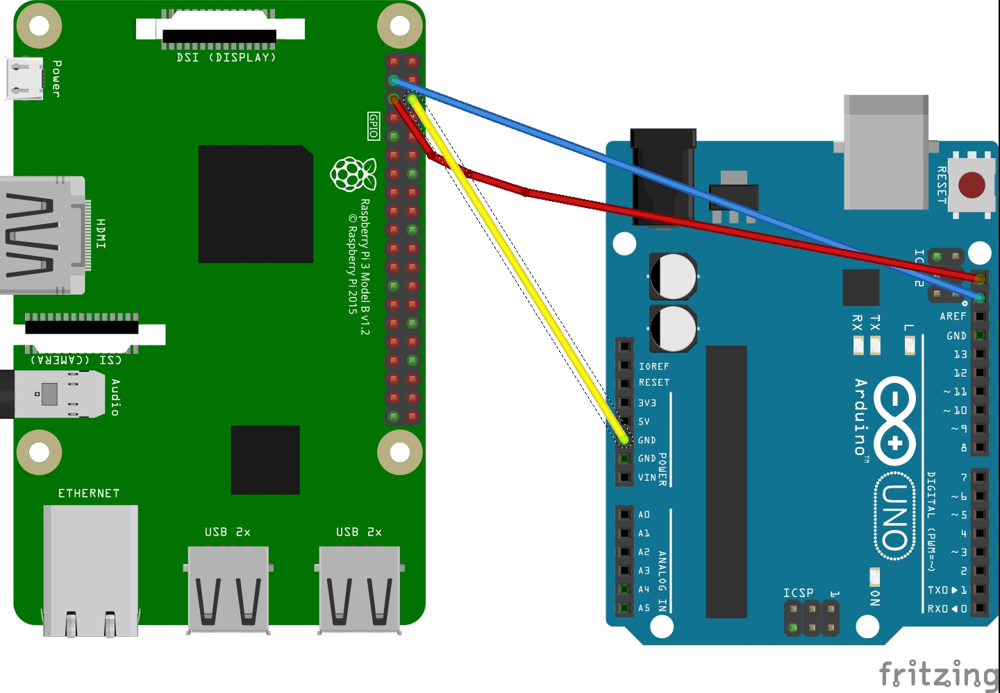

Electronics¶
Pi and Arduino Communication¶
I2C Method¶
The code is from https://oscarliang.com/raspberry-pi-arduino-connected-i2c/, with slight changes to accommodate python 3 instead of python 2
Using I2C protocol, we could communicate between raspberry pi and arduino using only three wires
The wiring is:
{kind=link}
Raspberry pi and Arduino both agree on the a slave address of 0x04
Upload Arduino code to Arduino board
The testing code is:
1 2 3 4 5 6 7 8 9 10 11 12 13 14 15 16 17 18 19 20 21 22 23 24 25 26 27 28 29 30 31 32 33 34 35 36 37 38 39 40 41 42 43 44 45 | #include <Wire.h>
#define SLAVE_ADDRESS 0x04
int number = 0;
int state = 0;
void setup() {
pinMode(13, OUTPUT);
Serial.begin(9600); // start serial for output
// initialize i2c as slave
Wire.begin(SLAVE_ADDRESS);
// define callbacks for i2c communication
Wire.onReceive(receiveData);
Wire.onRequest(sendData);
Serial.println("Ready!");
}
void loop() {
delay(100);
}
// callback for received data
void receiveData(int byteCount){
while(Wire.available()) {
number = Wire.read();
Serial.print("data received: ");
Serial.println(number);
if (number == 1){
if (state == 0){
digitalWrite(13, HIGH); // set the LED on
state = 1;
}
else{
digitalWrite(13, LOW); // set the LED off
state = 0;
}
}
}
}
// callback for sending data
void sendData(){
Wire.write(number);
}
|
Run the python code on the raspberry pi
The testing code is:
1 2 3 4 5 6 7 8 9 10 11 12 13 14 15 16 17 18 19 20 21 22 23 24 25 26 27 28 29 30 31 | import smbus
import time
# for RPI version 1, use ^ ^ bus = smbus.SMBus(0) ^ ^
bus = smbus.SMBus(1)
# This is the address we setup in the Arduino Program
address = 0x04
def writeNumber(value):
bus.write_byte(address, value)
# bus.write_byte_data(address, 0, value)
return -1
def readNumber():
number = bus.read_byte(address)
# number = bus.read_byte_data(address, 1)
return number
while True:
var = int(input("Enter 1 ^ ^ 9: "))
if not var:
continue
writeNumber(var)
print("RPI: Hi Arduino, I sent you ", var)
# sleep one second
time.sleep(1)
number = readNumber()
print("Arduino: Hey RPI, I received a digit ", number)
print()
|
See Also:¶
SPI Method¶
USB Method¶
PI and TFMini Lidar Communication¶
Setup¶
To search for available serial ports, enter the following command in terminal:
$ dmesg | grep tty
If the output looks like
pi@raspberrypi:~ $ dmesg | grep tty
[ 0.000000] Kernel command line: 8250.nr_uarts=1 bcm2708_fb.fbwidth=1824 bcm2708_fb.fbheight=984 bcm2708_fb.fbswap=1 dma.dmachans=0x7f35
bcm2709.boardrev=0xa02082 bcm2709.serial=0x11f38c9c bcm2709.uart_clock=48000000 smsc95xx.macaddr=B8:27:EB:F3:8C:9C vc_mem.mem_base=0x3dc00000
vc_mem.mem_size=0x3f000000 dwc_otg.lpm_enable=0 console=tty1 console=ttyS0,115200 root=/dev/mmcblk0p7 rootfstype=ext4 elevator=deadline
fsck.repair=yes rootwait splash plymouth.ignore-serial-consoles
[ 0.001365] console [tty1] enabled
[ 0.343313] console [ttyS0] disabled
[ 0.343481] 3f215040.uart: ttyS0 at MMIO 0x3f215040 (irq = 59, base_baud = 31250000) is a 16550
[ 1.078177] console [ttyS0] enabled
[ 2.210431] 3f201000.uart: ttyAMA0 at MMIO 0x3f201000 (irq = 87, base_baud = 0) is a PL011 rev2
[ 3.527349] systemd[1]: Expecting device dev-ttyS0.device...
[ 4.653975] systemd[1]: Starting system-serial\x2dgetty.slice.
[ 4.669517] systemd[1]: Created slice system-serial\x2dgetty.slice.
the console needs to be disabled on the serial port ttyAMA0.
To do so, run the configuration command
$ sudo raspi-config
and navigate to option 5, Interfacing Options. Choose P6, Serial.
When prompted, answer No to “Would you like a login shell to be accessible over serial?” and Yes to “Would you like the seria port hardware to be enabled?”.
Enter the following command to reboot and search for available ports again:
$ sudo reboot
$ dmesg | grep tty
The output now should look like:
pi@raspberrypi:~ $ dmesg | grep tty
[ 0.000000] Kernel command line: 8250.nr_uarts=1 bcm2708_fb.fbwidth=1824 bcm2708_fb.fbheight=984 bcm2708_fb.fbswap=1
dma.dmachans=0x7f35 bcm2709.boardrev=0xa02082 bcm2709.serial=0x11f38c9c bcm2709.uart_clock=48000000
smsc95xx.macaddr=B8:27:EB:F3:8C:9C vc_mem.mem_base=0x3dc00000 vc_mem.mem_size=0x3f000000 dwc_otg.lpm_enable=0
console=tty1 root=/dev/mmcblk0p7 rootfstype=ext4 elevator=deadline fsck.repair=yes rootwait splash plymouth.ignore-serial-consoles
[ 0.001345] console [tty1] enabled
[ 0.343464] 3f215040.uart: ttyS0 at MMIO 0x3f215040 (irq = 59, base_baud = 31250000) is a 16550
[ 1.146776] 3f201000.uart: ttyAMA0 at MMIO 0x3f201000 (irq = 87, base_baud = 0) is a PL011 rev2
Wiring¶
| Rasberry Pi 3 | TFmini |
|---|---|
| +5V | 5V (RED) |
| GND | GND (BLACK) |
| TXD0 | RX (WHITE) |
| RXD0 | TX (GREEN) |
The pinout of the Rasberry Pi is:

Code¶
1 2 3 4 5 6 7 8 9 10 11 12 13 14 15 16 17 18 19 20 21 22 23 24 25 26 27 28 29 30 31 32 33 | # tfmini.py
# supports Python 2
# prints distance from sensor
#coding: utf-8
import serial
import time
ser = serial.Serial("/dev/ttyS0", 115200)
def getTFminiData():
while True:
count = ser.in_waiting
#count = 0
#print(count)
if count > 8:
recv = ser.read(9)
ser.reset_input_buffer()
if recv[0] == 'Y' and recv[1] == 'Y': # 0x59 is 'Y'
low = int(recv[2].encode('hex'), 16)
high = int(recv[3].encode('hex'), 16)
distance = low + high * 256
print('distance is: ')
print(distance)
time.sleep(1)
if __name__ == '__main__':
try:
if ser.is_open == False:
ser.open()
getTFminiData()
except KeyboardInterrupt: # Ctrl+C
if ser != None:
ser.close()
|
1 2 3 4 5 6 7 8 9 10 11 12 13 14 15 16 17 18 19 20 21 22 23 24 25 26 27 28 29 30 31 32 33 34 35 36 37 38 39 40 41 42 43 44 45 46 47 48 49 | # tfmini_2.py
# supports Python 2 or Python 3
# prints distance and strength from sensor
#coding: utf-8
import serial
import time
ser = serial.Serial("/dev/ttyS0", 115200)
def getTFminiData():
while True:
#time.sleep(0.1)
count = ser.in_waiting
if count > 8:
recv = ser.read(9)
ser.reset_input_buffer()
# type(recv), 'str' in python2(recv[0] = 'Y'), 'bytes' in python3(recv[0] = 89)
# type(recv[0]), 'str' in python2, 'int' in python3
if recv[0] == 0x59 and recv[1] == 0x59: #python3
distance = recv[2] + recv[3] * 256
strength = recv[4] + recv[5] * 256
print('(', distance, ',', strength, ')')
ser.reset_input_buffer()
if recv[0] == 'Y' and recv[1] == 'Y': #python2
lowD = int(recv[2].encode('hex'), 16)
highD = int(recv[3].encode('hex'), 16)
lowS = int(recv[4].encode('hex'), 16)
highS = int(recv[5].encode('hex'), 16)
distance = lowD + highD * 256
strength = lowS + highS * 256
print(distance, strength)
# you can also distinguish python2 and python3:
#import sys
#sys.version[0] == '2' #True, python2
#sys.version[0] == '3' #True, python3
if __name__ == '__main__':
try:
if ser.is_open == False:
ser.open()
getTFminiData()
except KeyboardInterrupt: # Ctrl+C
if ser != None:
ser.close()
|
PI and IMU communication¶
I2C Method¶
The example code for this section in the PiCar/src/pi/imu
To compile, use the command:
$gcc -o <programname> runi2c.c -lm
Wiring:
| RPI | IMU |
|---|---|
| Pin 1 (3.3v) | Vcc |
| Pin 3 | SDA |
| Pin 5 | SCL |
| Pin 6 | Gnd |
The connection is by SMBUS.
For RPI, go to /usr/include/linux, replace i2c_dev.h with the header file in the repository
(Method ‘enableIMU’ needs further development to enable IMU configuration setting)